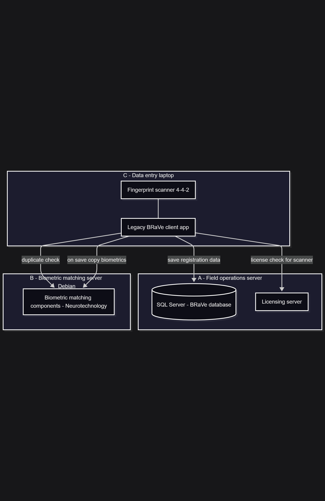
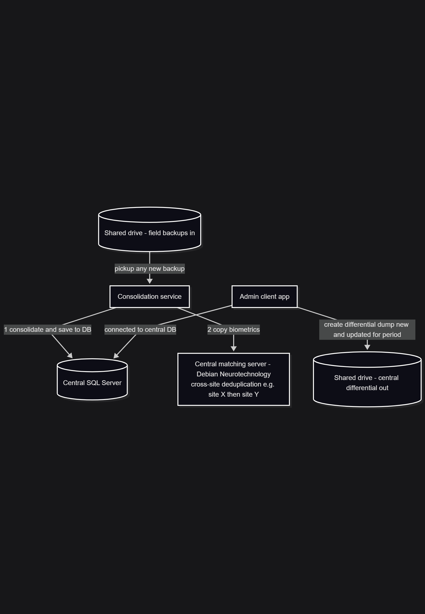
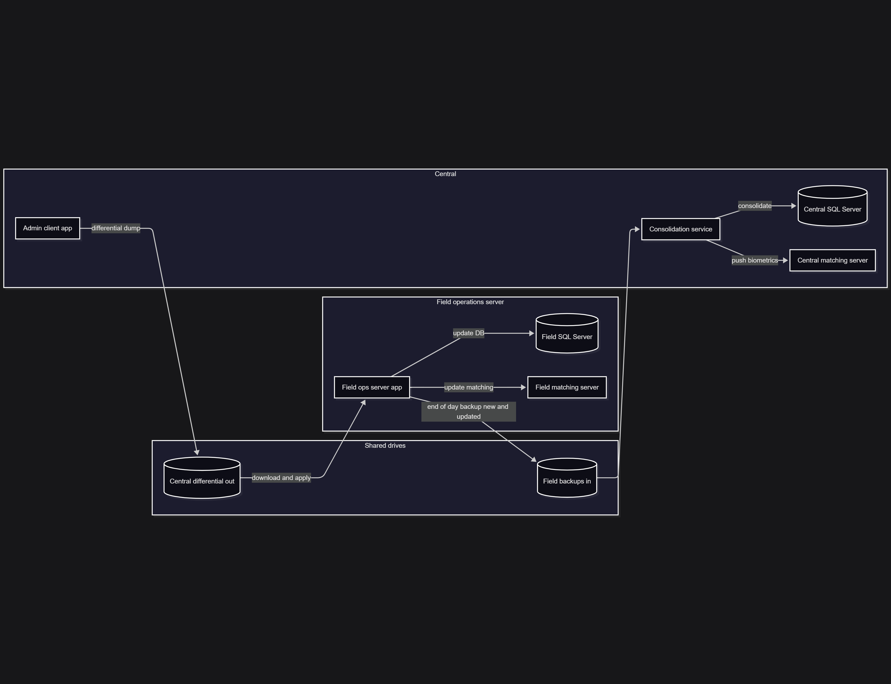
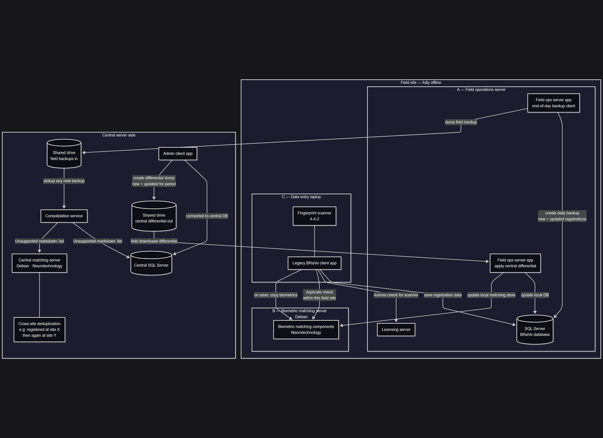

Lead Solution Architect with 15+ years designing and delivering enterprise platforms across
application, data, integration, security, and AI domains. I architect secure, scalable,
multi-tenant systems, lead technical teams, and take solutions from requirements through
deployment and operational support.
Architecture domains
Solution Architecture
Application Architecture
Data Architecture
Integration Architecture
Security Architecture
AI Architecture
Cloud Architecture
Core competencies
Multi-Tenant Platforms
Event-Driven Architecture
Identity & Access Management
AI & Machine Learning
Biometric Systems
Azure Cloud
Architecture Governance
Technical Leadership
Most recent project
BRaVe — Biometric Registration & Verification System
Role: Lead Solution Architect & Technical Lead
Overview
BRaVe is a multi-tenant biometric registration and verification platform supporting
beneficiary registration, verification, targeting, referrals, and biometric matching workflows.
I serve as the architecture owner and technical lead, working directly with the Product Owner
and leading a team of three software developers.
Open source & digital public good
BRaVe began as an internal platform and was released as open source in
June 2026. The work sits in a programme partly funded by
ECHO,
within a broader interoperability effort across registration systems used by
humanitarian partners. The intent is to offer BRaVe as a
digital public good that other organizations can adopt and extend.
The platform is deployed across four Azure resource-group sets that we operate:
Internal — Dev, UAT, and Prod for our own delivery and operations
Partner resource group for partners who do not yet run their own system
We manage both the internal and partner estates. Production and the partner
environment remain on separate resource groups so that data governance boundaries
stay clear, as directed by headquarters.
Business challenge
Design a secure and scalable platform capable of:
Managing multiple organizations on a single platform
Supporting biometric registration and matching
Supporting field data collection via mobile that works offline and syncs to the server when online, alongside web access
BRaVe Legacy — Offline field registration platform
Role: Lead Software Developer / System Architect
Overview
BRaVe Legacy is a fully offline biometric registration system for field operations.
Each field site collects and checks data locally. Sites periodically exchange data with a
central server so registrations can be consolidated and duplicates can be found across sites.
The design balances disconnected field reality with headquarters-level integrity:
collect and match offline, consolidate centrally for cross-site deduplication, then push
differentials back to the field.
Business challenge
Operate registration with little or no connectivity in the field
Support fingerprint capture and fast local duplicate checks
Consolidate many field sites into one central picture
Detect cross-site duplicates when people register at more than one location
Keep field databases and matching stores aligned via periodic differentials
Field operations
Each site runs a field operations server (SQL Server + licensing), a Debian biometric
matching server (Neurotechnology), and data-entry laptops with 4-4-2 fingerprint scanners.
On save, the client updates the local database, checks licensing, runs a local duplicate
check, and copies biometrics into the matching store.

Field site layout — operations server, matching server, and data-entry client.
Central server
Central hosts SQL Server, a matching server, and a consolidation service that picks up
field backups from a shared drive, writes them to the central database, and pushes
biometrics into central matching for cross-site deduplication. An admin client can then
produce a differential dump for a given period.

Central consolidation, matching, and differential export.
Data consolidation loop
End of day: the field creates a backup of new and updated registrations and drops it on
the inbound share. Central consolidates, then an admin publishes a differential. Field
teams download and apply it to update both the local database and matching server.

Field → central consolidation → differential back to field.
Key architectural decisions
Fully offline field operation
Challenge
Field sites often have unreliable or no connectivity.
Decision
Run complete local stacks: SQL Server, licensing, and biometric matching on site.
Outcome
Registration and local deduplication continue without continuous network access.
Dedicated matching appliance
Challenge
Many-to-many biometric search must stay fast at large template counts.
Decision
Deploy Neurotechnology matching on a separate Debian server per site and at central.
Outcome
Sub-2s matching even around one million templates, without blocking the SQL path.
File-based consolidation
Challenge
Move data between disconnected sites and headquarters safely.
Decision
Use shared-drive backups inbound and differential dumps outbound, processed by a central service.
Outcome
Clear operational rhythm without requiring always-on site connectivity.
Cross-site deduplication
Challenge
People may register at site X and later again at site Y.
Decision
Push consolidated biometrics into a central matching store after each import.
Outcome
Duplicates can be detected across field operations, not only within one site.
Technology landscape
SQL Server
Windows Forms / .NET
Neurotechnology SDK
Debian
Fingerprint scanners (4-4-2)
Licensing server
Shared-drive exchange
Background consolidation service
Differential sync
Full architecture
End-to-end view of field collection, central consolidation, and the differential sync back to sites.

Complete BRaVe Legacy architecture — field, exchange, and central.
Contact
Open to architecture leadership and complex platform delivery.